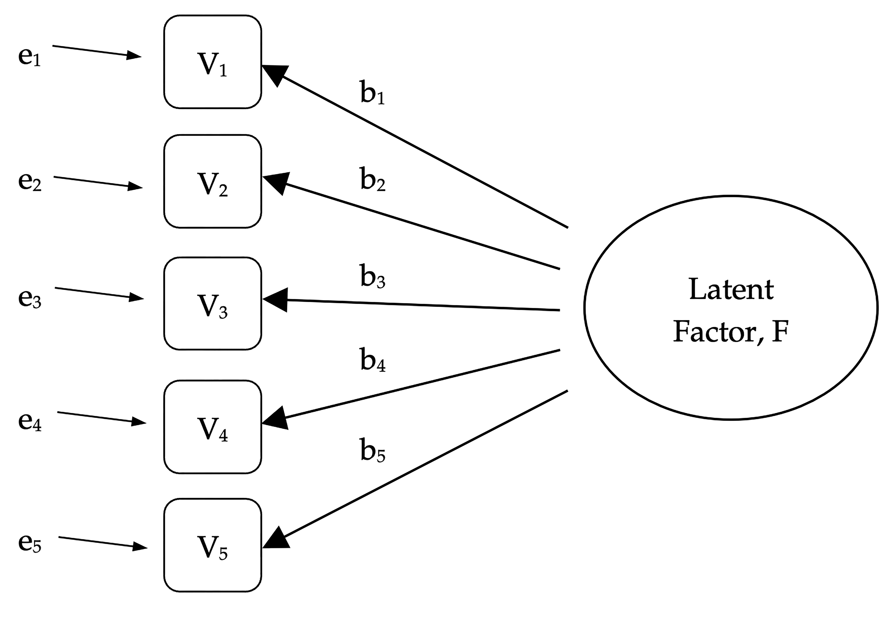
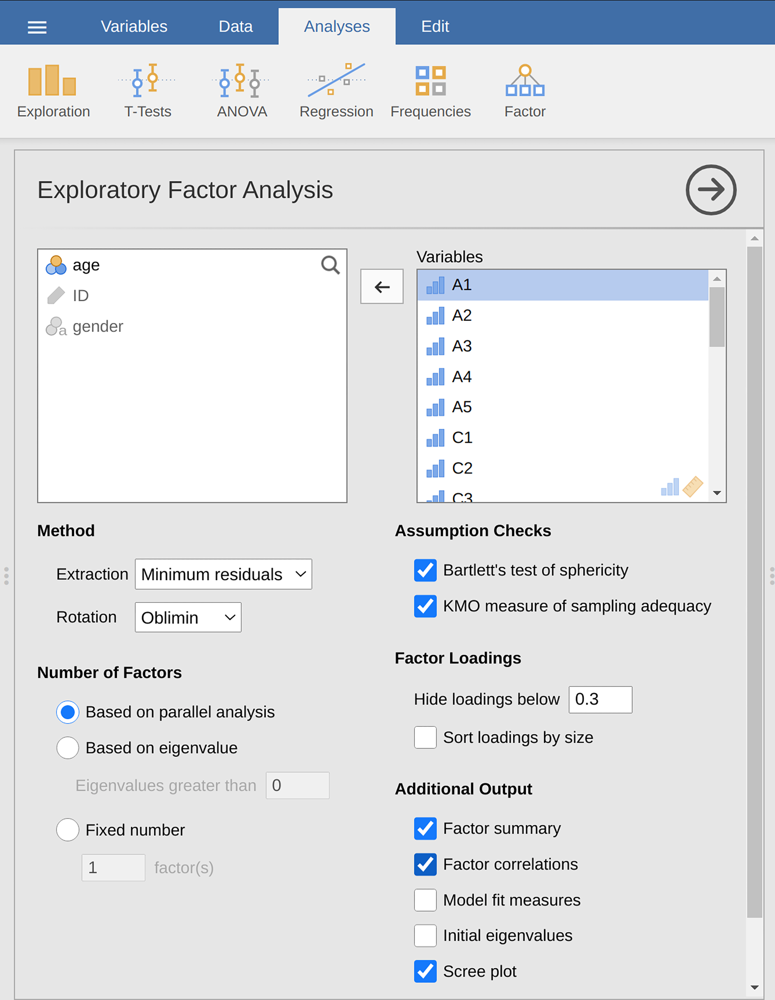
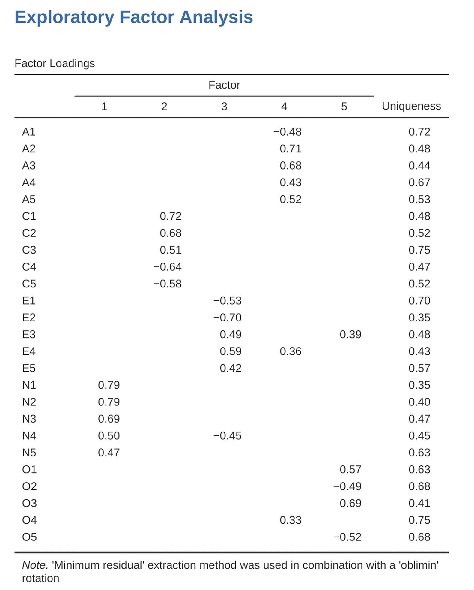
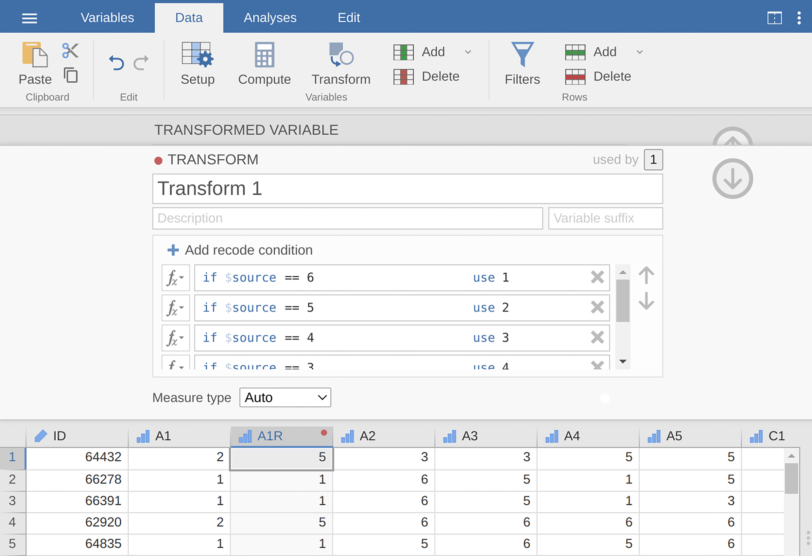
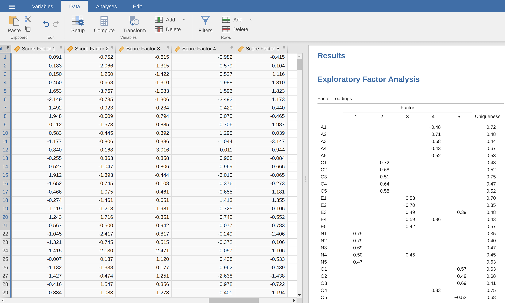
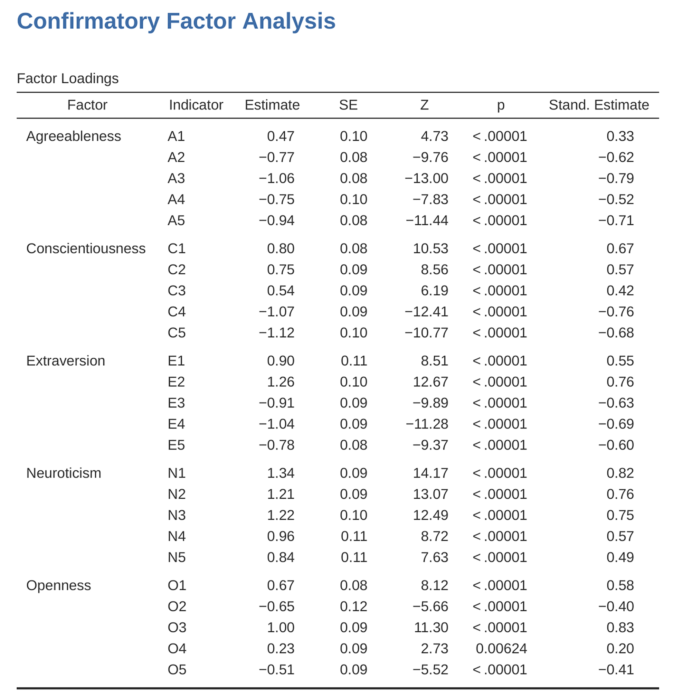
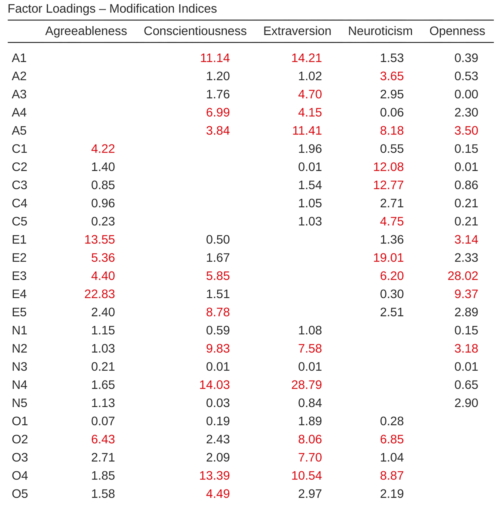
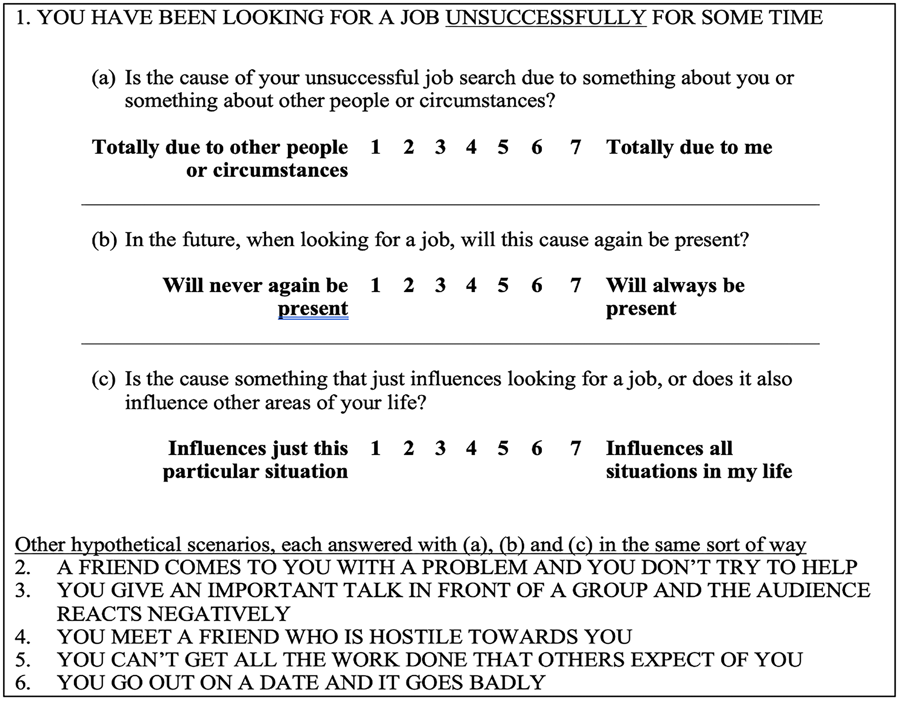
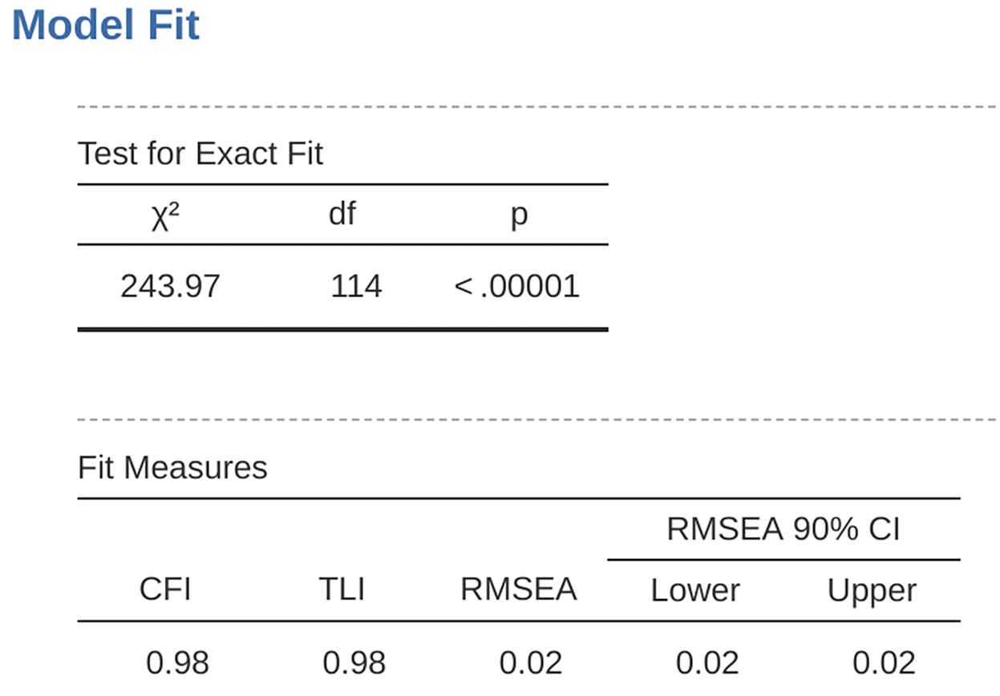
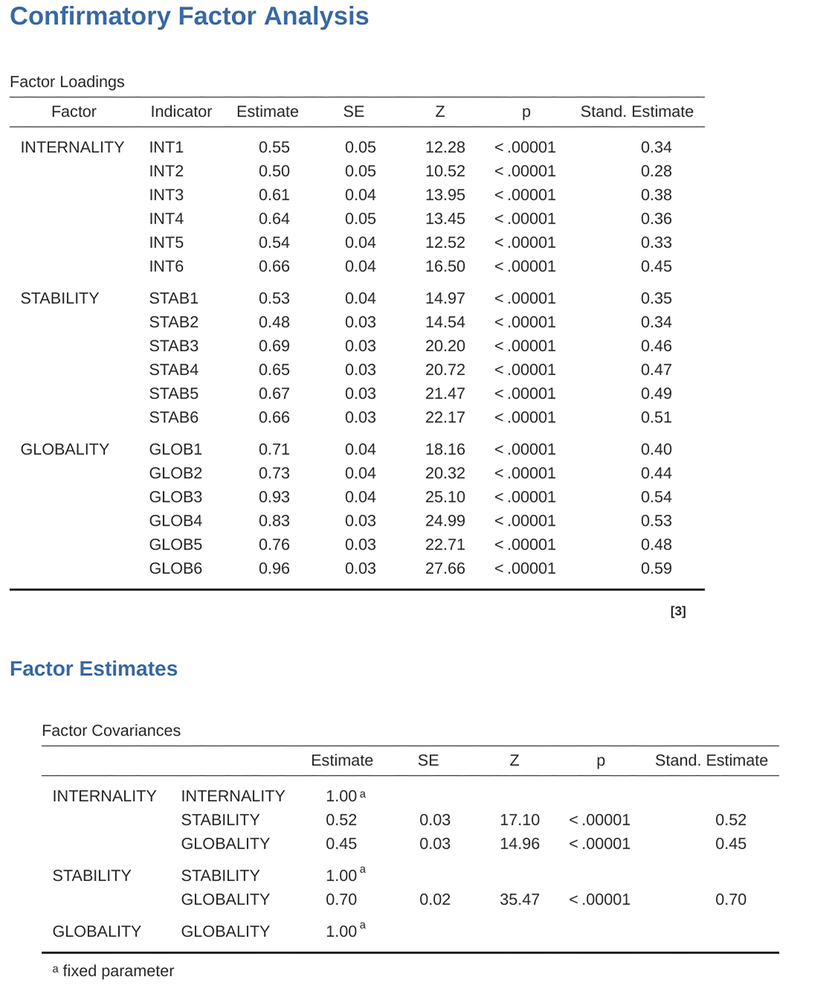

15 Factor Analysis
Previous chapters have covered statistical tests for differences between two or more groups. However, sometimes when conducting research, we may wish to examine how multiple variables co-vary. That is, how they are related to each other and whether the patterns of relatedness suggest anything interesting and meaningful. For example, we are often interested in exploring whether there are any underlying unobserved latent factors that are represented by the observed, directly measured, variables in our dataset. In statistics, latent factors are initially hidden variables that are not directly observed but are rather inferred (through statistical analysis) from other variables that are observed (directly measured).
In this chapter we will consider a number of different Factor Analysis and related techniques, starting with Exploratory Factor Analysis (EFA). EFA is a statistical technique for identifying underlying latent factors in a data set. Then we will cover Principal Component Analysis (PCA) which is a data reduction technique which, strictly speaking, does not identify underlying latent factors. Instead, PCA simply produces a linear combination of observed variables. Following this, the section on Confirmatory Factor Analysis (CFA) shows that, unlike EFA, with CFA you start with an idea - a model - of how the variables in your data are related to each other. You then test your model against the observed data and assess how good a fit the model is. A more sophisticated version of CFA is the so-called Multi-Trait Multi-Method CFA approach in which both latent factor and method variance are included in the model. This is useful when there are different methodological approaches used for measurement and therefore method variance is an important consideration. Finally, we will cover a related analysis: Internal consistency reliability analysis tests how consistently a scale measures a psychological construct.
15.1 Exploratory Factor Analysis
Exploratory Factor Analysis (EFA) is a statistical technique for revealing any hidden latent factors that can be inferred from our observed data. This technique calculates to what extent a set of measured variables, for example \(V1, V2, V3, V4\), and \(V5\), can be represented as measures of an underlying latent factor. This latent factor cannot be measured through just one observed variable but instead is manifested in the relationships it causes in a set of observed variables.
In Figure 15.1 each observed variable \(V\) is ‘caused’ to some extent by the underlying latent factor (\(F\)), depicted by the coefficients \(b_1\) to \(b_5\) (also called factor loadings). Each observed variable also has an associated error term, e1 to e5. Each error term is the variance in the associated observed variable, \(V_i\) , that is unexplained by the underlying latent factor.
In Psychology, latent factors represent psychological phenomena or constructs that are difficult to directly observe or measure. For example, personality, or intelligence, or thinking style. In the example in Figure 15.1 we may have asked people five specific questions about their behaviour or attitudes, and from that we are able to get a picture about a personality construct called, for example, extraversion. A different set of specific questions may give us a picture about an individual’s introversion, or their conscientiousness.
Here’s another example: we may not be able to directly measure statistics anxiety, but we can measure whether statistics anxiety is high or low with a set of questions in a questionnaire. For example, “\(Q1\): Doing the assignment for a statistics course”, “\(Q2\): Trying to understand the statistics described in a journal article”, and “\(Q3\): Asking the lecturer for help in understanding something from the course”, etc., each rated from low anxiety to high anxiety. People with high statistics anxiety will tend to give similarly high responses on these observed variables because of their high statistics anxiety. Likewise, people with low statistics anxiety will give similar low responses to these variables because of their low statistics anxiety.
In exploratory factor analysis (EFA), we are essentially exploring the correlations between observed variables to uncover any interesting, important underlying (latent) factors that are identified when observed variables co-vary. We can use statistical software to estimate any latent factors and to identify which of our variables have a high loading1 (e.g. loading > 0.5) on each factor, suggesting they are a useful measure, or indicator, of the latent factor. Part of this process includes a step called rotation, which to be honest is a pretty weird idea but luckily we don’t have to worry about understanding it; we just need to know that it is helpful because it makes the pattern of loadings on different factors much clearer. As such, rotation helps with seeing more clearly which variables are linked substantively to each factor. We also need to decide how many factors are reasonable given our data, and helpful in this regard is something called Eigen values. We’ll come back to this in a moment, after we have covered some of the main assumptions of EFA.
15.1.1 Checking assumptions
There are a couple of assumptions that need to be checked as part of the analysis. The first assumption is sphericity, which essentially checks that the variables in your dataset are correlated with each other to the extent that they can potentially be summarised with a smaller set of factors. Bartlett’s test for sphericity checks whether the observed correlation matrix diverges significantly from a zero (or null) correlation matrix. So, if Bartlett’s test is significant (\(p < .05\)), this indicates that the observed correlation matrix is significantly divergent from the null, and is therefore suitable for EFA.
The second assumption is sampling adequacy and is checked using the Kaiser-MeyerOlkin (KMO) Measure of Sampling Adequacy (MSA). The KMO index is a measure of the proportion of variance among observed variables that might be common variance. Using partial correlations, it checks for factors that load just two items. We seldom, if ever, want EFA producing a lot of factors loading just two items each. KMO is about sampling adequacy because partial correlations are typically seen with inadequate samples. If the KMO index is high (\(\approx 1\)), the EFA is efficient whereas if KMO is low (\(\approx 0\)), the EFA is not relevant. KMO values smaller than \(0.5\) indicates that EFA is not suitable and a KMO value of \(0.6\) should be present before EFA is considered suitable. Values between \(0.5\) and \(0.7\) are considered adequate, values between \(0.7\) and \(0.9\) are good and values between \(0.9\) and \(1.0\) are excellent.
15.1.2 What is EFA good for?
If the EFA has provided a good solution (i.e. factor model), then we need to decide what to do with our shiny new factors. Researchers often use EFA during psychometric scale development. They will develop a pool of questionnaire items that they think relate to one or more psychological constructs, use EFA to see which items “go together” as latent factors, and then they will assess whether some items should be removed because they don’t usefully or distinctly measure one of the latent factors.
In line with this approach, another consequence of EFA is to combine the variables that load onto distinct factors into a factor score, sometimes known as a scale score. There are two options for combining variables into a scale score:
- Create a new variable with a score weighted by the factor loadings for each item that contributes to the factor.
- Create a new variable based on each item that contributes to the factor, but weighting them equally.
In the first option each item’s contribution to the combined score depends on how strongly it relates to the factor. In the second option we typically just average across all the items that contribute substantively to a factor to create the combined scale score variable. Which to choose is a matter of preference, though a disadvantage with the first option is that loadings can vary quite a bit from sample to sample, and in behavioural and health sciences we are often interested in developing and using composite questionnaire scale scores across different studies and different samples. In which case it is reasonable to use a composite measure that is based on the substantive items contributing equally rather than weighting by sample specific loadings from a different sample. In any case, understanding a combined variable measure as an average of items is simpler and more intuitive than using a sample specific optimally-weighted combination.
A more advanced statistical technique, one which is beyond the scope of this book, undertakes regression modelling where latent factors are used in prediction models of other latent factors. This is called “structural equation modelling” and there are specific software programmes and R packages dedicated to this approach. But let’s not get ahead of ourselves; what we should really focus on now is how to do an EFA in jamovi.
15.1.3 EFA in jamovi
First, we need some data. Twenty-five personality self-report items (see Figure 15.2) taken from the International Personality Item Pool were included as part of the Synthetic Aperture Personality Assessment (SAPA) web-based personality assessment (SAPA: http://sapa-project.org) project. The 25 items are organized by five putative factors: Agreeableness, Conscientiousness, Extraversion, Neuroticism, and Openness.
The item data were collected using a 6-point response scale:
- Very Inaccurate
- Moderately Inaccurate
- Slightly Inaccurate
- Slightly Accurate
- Moderately Accurate
- Very Accurate.
A sample of \(N=250\) responses is contained in the dataset bfi_sample.csv . As researchers, we are interested in exploring the data to see whether there are some underlying latent factors that are measured reasonably well by the \(25\) observed variables in the bfi_sample.csv data file. Open up the dataset and check that the \(25\) variables are coded as continuous variables (technically they are ordinal though for EFA in jamovi it mostly doesn’t matter, except if you decide to calculate weighted factor scores in which case continuous variables are needed). To perform EFA in jamovi:

Select Factor - Exploratory Factor Analysis from the main jamovi button bar to open the EFA analysis window (Figure 15.3).
Select the 25 personality questions and transfer them into the ‘Variables’ box.
Check appropriate options, including ‘Assumption Checks’, but also Rotation ‘Method’, ‘Number of Factors’ to extract, and ‘Additional Output’ options. See Figure 15.3 for suggested options for this illustrative EFA, and please note that the Rotation ‘Method’ and ‘Number of Factors’ extracted is typically adjusted by the researcher during the analysis to find the best result, as described below.

First, check the assumptions (Figure 15.4). You can see that (1) Bartlett’s test of sphericity is significant, so this assumption is satisfied; and (2) the KMO measure of sampling adequacy (MSA) is \(0.81\) overall, suggesting good sampling adequacy. No problems here then!
The next thing to check is how many factors to use (or “extract” from the data). Three different approaches are available:
- One convention is to choose all components with Eigen values greater than 12. This would give us four factors with our data (try it and see).
Examination of the scree plot, as in Figure 15.5, lets you identify the “point of inflection”. This is the point at which the slope of the scree curve clearly levels off, below the “elbow”. This would give us five factors with our data. Interpreting scree plots is a bit of an art: in Figure 15.5 there is a noticeable step from \(5\) to \(6\) factors, but in other scree plots you look at it will not be so clear cut.
Using a parallel analysis technique, the obtained Eigen values are compared to those that would be obtained from random data. The number of factors extracted is the number with Eigen values greater than what would be found with random data.
The third approach is a good one according to Fabrigar et al. (1999), although in practice researchers tend to look at all three and then make a judgement about the number of factors that are most easily or helpfully interpreted. This can be understood as the “meaningfulness criterion”, and researchers will typically examine, in addition to the solution from one of the approaches above, solutions with one or two more or fewer factors. They then adopt the solution which makes the most sense to them.
At the same time, we should also consider the best way to rotate the final solution. There are two main approaches to rotation: orthogonal (e.g. ‘varimax’) rotation forces the selected factors to be uncorrelated, whereas oblique (e.g. ‘oblimin’) rotation allows the selected factors to be correlated. Dimensions of interest to psychologists and behavioural scientists are not often dimensions we would expect to be orthogonal, so oblique solutions are arguably more sensible3

Practically, if in an oblique rotation the factors are found to be substantially correlated (positive or negative, and > 0.3), as in Figure 15.6 where a correlation between two of the extracted factors is 0.31, then this would confirm our intuition to prefer oblique rotation. If the factors are, in fact, correlated, then an oblique rotation will produce a better estimate of the true factors and a better simple structure than will an orthogonal rotation. And, if the oblique rotation indicates that the factors have close to zero correlations between one another, then the researcher can go ahead and conduct an orthogonal rotation (which should then give about the same solution as the oblique rotation).
On checking the correlation between the extracted factors at least one correlation was greater than 0.3 (Figure 15.6), so an oblique (‘oblimin’) rotation of the five extracted factors is preferred. We can also see in Figure 15.6 that the proportion of overall variance in the data that is accounted for by the five factors is 46%. Factor one accounts for around 10% of the variance, factors two to four around 9% each, and factor five just over 7%. This isn’t great; it would have been better if the overall solution accounted for a more substantive proportion of the variance in our data.
Be aware that in every EFA you could potentially have the same number of factors as observed variables, but every additional factor you include will add a smaller amount of explained variance. If the first few factors explain a good amount of the variance in the original 25 variables, then those factors are clearly a useful, simpler substitute for the 25 variables. You can drop the rest without losing too much of the original variability. But if it takes 18 factors (for example) to explain most of the variance in those 25 variables, you might as well just use the original 25.
Figure 15.7 shows the factor loadings. That is, how the 25 different personality items load onto each of the five selected factors. We have hidden loadings less than \(0.3\) (set in the options shown in Figure 15.3.
For Factors \(1, 2, 3\) and \(4\) the pattern of factor loadings closely matches the putative factors specified in Figure 15.2. Phew! And factor \(5\) is pretty close, with four of the five observed variables that putatively measure “openness” loading pretty well onto the factor. Variable \(04\) doesn’t quite seem to fit though, as the factor solution in Figure 15.7 suggests that it loads onto factor \(4\) (albeit with a relatively low loading) but not substantively onto factor \(5\).
The other thing to note is that those variables that were denoted as “R: reverse coding” in Figure 15.2 are those that have negative factor loadings. Take a look at the items A1 (“Am indifferent to the feelings of others”) and A2 (“Inquire about others’ well-being”). We can see that a high score on \(A1\) indicates low Agreeableness, whereas a high score on \(A2\) (and all the other “A” variables for that matter) indicates high Agreeableness. Therefore A1 will be negatively correlated with the other “A” variables, and this is why it has a negative factor loading, as shown in Figure 15.7.

We can also see in Figure 15.7 the “uniqueness” of each variable. Uniqueness is the proportion of variance that is ‘unique’ to the variable and not explained by the factors4. For example, 72% of the variance in ‘A1’ is not explained by the factors in the five factor solution. In contrast, ‘N1’ has relatively low variance not accounted for by the factor solution (35%). Note that the greater the ‘uniqueness’, the lower the relevance or contribution of the variable in the factor model.
To be honest, it’s unusual to get such a neat solution in EFA. It’s typically quite a bit more messy than this, and often interpreting the meaning of the factors is more challenging. It’s not often that you have such a clearly delineated item pool. More often you will have a whole heap of observed variables that you think may be indicators of a few underlying latent factors, but you don’t have such a strong sense of which variables are going to go where!
So, we seem to have a pretty good five factor solution, albeit accounting for a relatively low overall proportion of the observed variance. Let’s assume we are happy with this solution and want to use our factors in further analysis. The straightforward option is to calculate an overall (average) score for each factor by adding together the score for each variable that loads substantively onto the factor and then dividing by the number of variables (in other words create a ‘mean score’ for each person across the items for each scale. For each person in our dataset that entails, for example for the Agreeableness factor, adding together \(A1 + A2 + A3 + A4 + A5\), and then dividing by 5. 5 In essence, the factor score we have calculated is based on equally weighted scores from each of the included variables/itmes. We can do this in jamovi in two steps:
Recode A1 into “A1R” by reverse scoring the values in the variable (i.e. \(6 = 1\); \(5 = 2\); \(4 = 3\); \(3 = 4\); \(2 = 5\); \(1 = 6\)) using the jamovi transform variable command (see Figure 15.8).
Compute a new variable, called “Agreeableness’, by calculating the mean of A1R, A2, A3, A4 and A5. Do this using the jamovi compute new variable command (see Figure 15.9).


Another option is to create an optimally-weighted factor score index. To do this, save the factor scores to the data set, using the ‘Save’ - ‘Factor scores’ checkbox. Once you have done this you will see that five new variables (columns) have been added to the data, one for each factor extracted. See Figure 15.10 and Figure 15.11.

Now you can go ahead and undertake further analyses, using either the mean score based factor scales (e.g. as in Figure 15.9) or using the optimally-weighted factor scores calculated by jamovi. Your choice! For example, one thing you might like to do is see whether there are any gender differences in each of our personality scales. We did this for the Agreeableness score that we calculated using the mean score approach, and although the t test plot (Figure 15.12) showed that males were less agreeable than females, this was not a significant difference (Mann-Whitney \(U = 5768\), \(p = .075\)).
15.1.4 Writing up an EFA
Hopefully, so far we have given you some sense of EFA and how to undertake EFA in jamovi. So, once you have completed your EFA, how do you write it up? There is not a formal standard way to write up an EFA, and examples tend to vary by discipline and researcher. That said, there are some fairly standard pieces of information to include in your write-up:
What are the theoretical underpinnings for the area you are studying, and specifically for the constructs that you are interested in uncovering through EFA.
A description of the sample (e.g. demographic information, sample size, sampling method).
A description of the type of data used (e.g., nominal, continuous) and descriptive statistics.
Describe how you went about testing the assumptions for EFA. Details regarding sphericity checks and measures of sampling adequacy should be reported.
Explain what FA extraction method (e.g. ‘Minimum residuals’ or ‘Maximum likelihood’) was used.
Explain the criteria and process used for deciding how many factors were extracted in the final solution, and which items were selected. Clearly explain the rationale for key decisions during the EFA process.
Explain what rotation methods were attempted, the reasons why, and the results.
Final factor loadings should be reported in the results, in a table. This table should also report the uniqueness (or communality) for each variable (in the final column). Factor loadings should be reported with descriptive labels in addition to item numbers. Correlations between the factors should also be included, either at the bottom of this table, in a separate table.
Meaningful names for the extracted factors should be provided. You may like to use previously selected factor names, but on examining the actual items and factors you may think a different name is more appropriate
15.2 Principal Component Analysis
In the previous section we saw that EFA works to identify underlying latent factors. And, as we saw, in one scenario the smaller number of latent factors can be used in further statistical analysis using some sort of combined factor scores.
In this way EFA is being used as a “data reduction” technique. Another type of data reduction technique, sometimes seen as part of the EFA family, is principal component analysis (PCA) . However, PCA does not identify underlying latent factors. Instead it creates a linear composite score from a larger set of measured variables.
PCA simply produces a mathematical transformation to the original data with no assumptions about how the variables co-vary. The aim of PCA is to calculate a few linear combinations (components) of the original variables that can be used to summarize the observed data set without losing much information. However, if identification of underlying structure is a goal of the analysis, then EFA is to be preferred. And, as we saw, EFA produces factor scores that can be used for data reduction purposes just like principal component scores (Fabrigar et al., 1999).
PCA has been popular in Psychology for a number of reasons, and therefore it’s worth mentioning, although nowadays EFA is just as easy to do given the power of desktop computers and can be less susceptible to bias than PCA, especially with a small number of factors and variables. Much of the procedure is similar to EFA, so although there are some conceptual differences, practically the steps are the same, and with large samples and a sufficient number of factors and variables, the results from PCA and EFA should be fairly similar.
To undertake PCA in jamovi, all you need to do is select ‘Factor’ - ‘Principal Component Analysis’ from the main jamovi button bar to open the PCA analysis window. Then you can follow the same steps from EFA in jamovi above.
15.3 Confirmatory Factor Analysis
So, our attempt to identify underlying latent factors using EFA with carefully selected questions from the personality item pool seemed to be pretty successful. The next step in our quest to develop a useful measure of personality is to check the latent factors we identified in the original EFA with a different sample. We want to see if the factors hold up, if we can confirm their existence with different data. This is a more rigorous check, as we will see. And it’s called Confirmatory Factor Analysis (CFA) as we will, unsurprisingly, be seeking to confirm a pre-specified latent factor structure.6
In CFA, instead of doing an analysis where we see how the data goes together in an exploratory sense, we instead impose a structure, like in Figure 15.13, on the data and see how well the data fits our pre-specified structure. In this sense, we are undertaking a confirmatory analysis, to see how well a pre-specified model is confirmed by the observed data.
A straightforward confirmatory factor analysis (CFA) of the personality items would therefore specify five latent factors as shown in Figure 15.13, each measured by five observed variables. Each variable is a measure of an underlying latent factor. For example, A1 is predicted by the underlying latent factor Agreeableness. And because A1 is not a perfect measure of the Agreeableness factor, there is an error term, \(e\), associated with it. In other words, \(e\) represents the variance in A1 that is not accounted for by the Agreeableness factor. This is sometimes called measurement error.
The next step is to consider whether the latent factors should be allowed to correlate in our model. As mentioned earlier, in the psychological and behavioural sciences constructs are often related to each other, and we also think that some of our personality factors may be correlated with each other. So, in our model, we should allow these latent factors to co-vary, as shown by the double-headed arrows in Figure 15.13.
At the same time, we should consider whether there is any good, systematic, reason for some of the error terms to be correlated with each other. One reason for this might be that there is a shared methodological feature for particular sub-sets of the observed variables such that the observed variables might be correlated for methodological rather than substantive latent factor reasons. We’ll return to this possibility in a later section but, for now, there are no clear reasons that we can see that would justify correlating some of the error terms with each other
Without any correlated error terms, the model we are testing to see how well it fits with our observed data is just as specified in Figure 15.13. Only parameters that are included in the model are expected to be found in the data, so in CFA all other possible parameters (coefficients) are set to zero. So, if these other parameters are not zero (for example there may be a substantial loading from A1 onto the latent factor Extraversion in the observed data, but not in our model) then we may find a poor fit between our model and the observed data.
Right, let’s take a look at how we set this CFA analysis up in jamovi.
15.3.1 CFA in jamovi
Open up the bfi_sample2.csv file, check that the 25 variables are coded as ordinal (or continuous; it won’t make any difference for this analysis). To perform CFA in jamovi:
Select Factor - Confirmatory Factor Analysis from the main jamovi button bar to open the CFA analysis window (Figure 15.14).
Select the 5 A variables and transfer them into the ‘Factors’ box and give then the label “Agreeableness”.
Create a new Factor in the ‘Factors’ box and label it “Conscientiousness”. Select the 5 C variables and transfer them into the ‘Factors’ box under the “Conscientiousness” label.
Create another new Factor in the ‘Factors’ box and label it “Extraversion”. Select the 5 E variables and transfer them into the ‘Factors’ box under the “Extraversion” label.
Create another new Factor in the ‘Factors’ box and label it “Neuroticism”. Select the 5 N variables and transfer them into the ‘Factors’ box under the “Neuroticism” label.
Create another new Factor in the ‘Factors’ box and label it “Openness”. Select the 5 O variables and transfer them into the ‘Factors’ box under the “Openness” label.
Check other appropriate options, the defaults are ok for this initial work through, though you might want to check the “Path diagram” option under ‘Plots’ to see jamovi produce a (fairly) similar diagram to our Figure 15.13.
Once we have set up the analysis we can turn our attention to the jamovi results window and see what’s what. The first thing to look at is model fit (Figure 15.15) as this tells us how good a fit our model is to the observed data. NB in our model only the pre-specified covariances are estimated, including the factor correlations by default. Everything else is set to zero.

There are several ways of assessing model fit. The first is a chi-square statistic that, if small, indicates that the model is a good fit to the data. However, the chi-squared statistic used for assessing model fit is pretty sensitive to sample size, meaning that with a large sample a good enough fit between the model and the data almost always produces a large and significant (p < .05) chi-square value.
So, we need some other ways of assessing model fit. In jamovi several are provided by default. These are the Comparative Fit Index (CFI), the Tucker Lewis Index (TLI) and the Root Mean Square Error of Approximation (RMSEA) together with the 90% confidence interval for the RMSEA. Some useful rules of thumb are that a satisfactory fit is indicated by CFI > 0.9, TLI > 0.9, and RMSEA of about 0.05 to 0.08. A good fit is CFI > 0.95, TLI > 0.95, and RMSEA and upper CI for RMSEA < 0.05.
So, looking at Figure 15.15 we can see that the chi-square value is large and highly significant. Our sample size is not too large, so this possibly indicates a poor fit. The CFI is \(0.762\) and the TLI is 0.731, indicating poor fit between the model and the data. The RMSEA is \(0.085\) with a \(90\%\) confidence interval from \(0.077\) to \(0.092\), again this does not indicate a good fit.
Pretty disappointing, huh? But perhaps not too surprising given that in the earlier EFA, when we ran with a similar data set (see Exploratory Factor Analysis section), only around half of the variance in the data was accounted for by the five factor model.
Let’s go on to look at the factor loadings and the factor covariance estimates, shown in Figure 15.16 and Figure 15.17. The Z-statistic and p-value for each of these parameters indicates they make a reasonable contribution to the model (i.e. they are not zero) so there doesn’t appear to be any reason to remove any of the specified variable-factor paths, or factor-factor correlations from the model. Often the standardized estimates are easier to interpret, and these can be specified under the ‘Estimates’ option. These tables can usefully be incorporated into a written report or scientific article.

How could we improve the model? One option is to go back a few stages and think again about the items / measures we are using and how they might be improved or changed. Another option is to make some post hoc tweaks to the model to improve the fit. One way of doing this is to use “modification indices” (Figure 15.18), specified as an ‘Additional output’ option in jamovi.

What we are looking for is the highest modification index (MI) value. We would then judge whether it makes sense to add that additional term into the model, using a post hoc rationalisation. For example, we can see in Figure 15.18 that the largest MI for the factor loadings that are not already in the model is a value of 28.786 for the loading of N4 (“Often feel blue”) onto the latent factor Extraversion. This indicates that if we add this path into the model then the chi-square value will reduce by around the same amount.
But in our model adding this path arguably doesn’t really make any theoretical or methodological sense, so it’s not a good idea (unless you can come up with a persuasive argument that “Often feel blue” measures both Neuroticism and Extraversion). I can’t think of a good reason. But, for the sake of argument, let’s pretend it does make some sense and add this path into the model. Go back to the CFA analysis window (see Figure 15.14) and add N4 into the Extraversion factor. The results of the CFA will now change (not shown); the chi-square has come down to around 709 (a drop of around 30, roughly similar to the size of the MI) and the other fit indices have also improved, though only a bit. But it’s not enough: it’s still not a good fitting model.
If you do find yourself adding new parameters to a model using the MI values then always re-check the MI tables after each new addition, as the MIs are refreshed each time.
There is also a Table of Residual Covariance Modification Indices produced by jamovi (Figure 15.19). In other words, a table showing which correlated errors, if added to the model, would improve the model fit the most. It’s a good idea to look across both MI tables at the same time, spot the largest MI, think about whether the addition of the suggested parameter can be reasonably justified and, if it can, add it to the model. And then you can start again looking for the biggest MI in the re-calculated results.

You can keep going this way for as long as you like, adding parameters to the model based on the largest MI, and eventually you will achieve a satisfactory fit. But there will also be a strong possibility that in doing this you will have created a monster! A model that is ugly and deformed and doesn’t have any theoretical sense or purity. In other words, be very careful!
So far, we have checked out the factor structure obtained in the EFA using a second sample and CFA. Unfortunately, we didn’t find that the factor structure from the EFA was confirmed in the CFA, so it’s back to the drawing board as far as the development of this personality scale goes.
Although we could have tweaked the CFA using modification indexes, there really were not any good reasons (that I could think of) for these suggested additional factor loadings or residual covariances to be included. However, sometimes there is a good reason for residuals to be allowed to co-vary (or correlate), and a good example of this is shown in the next section on Multi-Trait Multi-Method CFA. Before we do that, let’s cover how to report the results of a CFA.
15.3.2 Reporting a CFA
There is not a formal standard way to write up a CFA, and examples tend to vary by discipline and researcher. That said, there are some fairly standard pieces of information to include in your write-up:
A theoretical and empirical justification for the hypothesized model.
A complete description of how the model was specified (e.g. the indicator variables for each latent factor, covariances between latent variables, and any correlations between error terms). A path diagram, like the one in Figure 15.13 would be good to include.
A description of the sample (e.g. demographic information, sample size, sampling method).
A description of the type of data used (e.g., nominal, continuous) and descriptive statistics.
Tests of assumptions and estimation method used.
A description of missing data and how the missing data were handled.
The software and version used to fit the model.
Measures, and the criteria used, to judge model fit.
Any alterations made to the original model based on model fit or modification indices.
All parameter estimates (i.e., loadings, error variances, latent (co)variances) and their standard errors, probably in a table.
15.4 Multi-Trait Multi-Method CFA
In this section we’re going to consider how different measurement techniques or questions can be an important source of data variability, known as method variance. To do this, we’ll use another psychological data set, one that contains data on “attributional style”.
The Attributional Style Questionnaire (ASQ) was used (Hewitt et al., 2004) to collect psychological wellbeing data from young people in the United Kingdom and New Zealand. They measured attributional style for negative events, which is how people habitually explain the cause of bad things that happen to them (Peterson & Seligman, 1984). The attributional style questionnaire (ASQ) measures three aspects of attributional style:
Internality is the extent to which a person believes that the cause of a bad event is due to his/her own actions.
Stability refers to the extent to which a person habitually believes the cause of a bad event is stable across time.
Globality refers to the extent to which a person habitually believes that the cause of a bad event in one area will affect other areas of their lives.
There are six hypothetical scenarios and for each scenario respondents answer a question aimed at (a) internality, (b) stability and (c) globality. So there are \(6 \times 3 = 18\) items overall. See Figure 15.20 for more details.

Researchers are interested in checking their data to see whether there are some underlying latent factors that are measured reasonably well by the 18 observed variables in the ASQ.
First, they try EFA with these 18 variables (not shown), but no matter how they extract or rotate, they can’t find a good factor solution. Their attempt to identify underlying latent factors in the Attributional Style Questionnaire (ASQ) proved fruitless. If you get results like this then either your theory is wrong (there is no underlying latent factor structure for attributional style, which is possible), the sample is not relevant (which is unlikely given the size and characteristics of this sample of young adults from the United Kingdom and New Zealand), or the analysis was not the right tool for the job. We’re going to look at this third possibility.
Remember that there were three dimensions measured in the ASQ: Internality, Stability and Globality, each measured by six questions as shown in Figure 15.21.
What if, instead of doing an analysis where we see how the data goes together in an exploratory sense, we instead impose a structure, like in Figure 15.21, on the data and see how well the data fits our pre-specified structure. In this sense, we are undertaking a confirmatory analysis, to see how well a pre-specified model is confirmed by the observed data.
A straightforward confirmatory factor analysis (CFA) of the ASQ would therefore specify three latent factors as shown in the columns of Figure 15.27, each measured by six observed variables.

We could depict this as in the diagram in Figure 15.22, which shows that each variable is a measure of an underlying latent factor. For example INT1 is predicted by the underlying latent factor Internality. And because INT1 is not a perfect measure of the Internality factor, there is an error term, e1, associated with it. In other words, e1 represents the variance in INT1 that is not accounted for by the Internality factor. This is sometimes called “measurement error”.

The next step is to consider whether the latent factors should be allowed to correlate in our model. As mentioned earlier, in the psychological and behavioural sciences constructs are often related to each other, and we also think that Internality, Stability, and Globality might be correlated with each other, so in our model we should allow these latent factors to co-vary, as shown in Figure 15.23.

At the same time, we should consider whether there is any good, systematic, reason for some of the error terms to be correlated with each other. Thinking back to the ASQ questions, there were three different sub-questions (a, b and c) for each main question (1-6). Q1 was about unsuccessful job hunting and it is plausible that this question has some distinctive artefactual or methodological aspects over and above the other questions (2-5), something to do with job hunting perhaps. Similarly, Q2 was about not helping a friend with a problem, and there may be some distinctive artefactual or methodological aspects to do with not helping a friend that is not present in the other questions (1, and 3-5).
So, as well as multiple factors, we also have multiple methodological features in the ASQ, where each of Questions 1-6 has a slightly different “method”, but each “method” is shared across the sub-questions a, b and c. In order to incorporate these different methodological features into the model we can specify that certain error terms are correlated with each other. For example, the errors associated with INT1, STAB1 and GLOB1 should be correlated with each other to reflect the distinct and shared methodological variance of Q1a, Q1b and Q1c. Looking at Figure 15.21, this means that as well as the latent factors represented by the columns, we will have correlated measurement errors for the variables in each row of the Table.
Whilst a basic CFA model like the one shown in Figure 15.22 could be tested against our observed data, we have in fact come up with a more sophisticated model, as shown in the diagram in Figure 15.23. This more sophisticated CFA model is known as a Multi-Trait Multi-Method (MTMM) model, and it is the one we will test in jamovi.
15.4.1 MTMM CFA in jamovi
Open up the ASQ.csv file and check that the 18 variables (six “Internality”, six “Stability” and six “Globality” variables) are specified as continuous variables.
To perform MTMM CFA in jamovi:
Select Factor - Confirmatory Factor Analysis from the main jamovi button bar to open the CFA analysis window (Figure 15.24).
Select the 6 INT variables and transfer them into the ‘Factors’ box and give them the label “Internality”.
Create a new Factor in the ‘Factors’ box and label it “Stability”. Select the 6 STAB variables and transfer them into the ‘Factors’ box under the “Stability” label.
Create another new Factor in the ‘Factors’ box and label it “Globality”. Select the 6 GLOB variables and transfer them into the ‘Factors’ box under the “Globality” label.
Open up the Residual Covariances options, and for each of our pre-specified correlations move the associated variables across into the ‘Residual Covariances’ box on the right. For example, highlight both INT1 and STAB1 and then click the arrow to move these across. Now do the same for INT1 and GLOB1, for STAB1 and GLOB1, for INT2 and STAB2, for INT2 and GLOB2, for STAB2 and GLOB2, for INT3 and STAB3, and so on.
Check other appropriate options, the defaults are ok for this initial work through, though you might want to check the “Path diagram” option under ‘Plots’ to see jamovi produce a (fairly) similar diagram to our Figure 15.23, and including all the error term correlations that we have added above.

Once we have set up the analysis we can turn our attention to the jamovi results window and see what’s what. The first thing to look at is “Model fit” as this tells us how good a fit our model is to the observed data (Figure 15.25). NB in our model only the pre-specified covariances are estimated, everything else is set to zero, so model fit is testing both whether the pre-specified “free” parameters are not zero, and conversely whether the other relationships in the data – the ones we have not specified in the model – can be held at zero.
Looking at Figure 15.25 we can see that the chi-square value is highly significant, which is not a surprise given the large sample size (N = 2748). The CFI is 0.98 and the TLI is also 0.98, indicating a very good fit. The RMSEA is 0.02 with a 90% confidence interval from 0.02 to 0.02 – pretty tight!
Overall, I think we can be satisfied that our pre-specified model is a very good fit to the observed data, lending support to our MTMM model for the ASQ.
We can now go on to look at the factor loadings and the factor covariance estimates, as in Figure 15.26. Often the standardized estimates are easier to interpret, and these can be specified under the ‘Estimates’ option. These tables can usefully be incorporated into a written report or scientific article.

You can see from Figure 15.26 that all of our pre-specified factor loadings and factor covariances are significantly different from zero. In other words, they all seem to be making a useful contribution to the model.
We’ve been pretty lucky with this analysis, getting a very good fit on our first attempt!
15.5 Internal consistency reliability analysis
After you have been through the process of initial scale development using EFA and CFA, you should have reached a stage where the scale holds up pretty well using CFA with different samples. One thing that you might also be interested in at this stage is to see how well the factors are measured using a scale that combines the observed variables.
In psychometrics we use reliability analysis to provide information about how consistently a scale measures a psychological construct (See earlier section on Section 2.3). Internal consistency is what we are concerned with here, and that refers to the consistency across all the individual items that make up a measurement scale. So, if we have \(V1, V2, V3, V4\) and \(V5\) as observed item variables, then we can calculate a statistic that tells us how internally consistent these items are in measuring the underlying construct.
A popular statistic used to check the internal consistency of a scale is Cronbach’s alpha (Chronbach, 1951). Cronbach’s alpha is a measure of equivalence (whether different sets of scale items would give the same measurement outcomes). Equivalence is tested by dividing the scale items into two groups (a “split-half”) and seeing whether analysis of the two parts gives comparable results. Of course, there are many ways a set of items could be split, but if all possible splits are made then it is possible to produce a statistic that reflects the overall pattern of split-half coefficients. Cronbach’s alpha (\(\alpha\)) is such a statistic: a function of all the split-half coefficients for a scale. If a set of items that measure a construct (e.g. an Extraversion scale) has an \(\alpha\) of \(0.80\), then the proportion of error variance in the scale is \(0.20\). In other words, a scale with an \(\alpha\) of \(0.80\) includes approximately 20% error.
BUT, (and that’s a BIG “BUT”), Cronbach’s alpha is not a measure of unidimensionality (i.e. an indicator that a scale is measuring a single factor or construct rather than multiple related constructs). Scales that are multidimensional will cause alpha to be under-estimated if not assessed separately for each dimension, but high values for alpha are not necessarily indicators of unidimensionality. So, an \(\alpha\) of 0.80 does not mean that 80% of a single underlying construct is accounted for. It could be that the 80% comes from more than one underlying construct. That’s why EFA and CFA are useful to do first.
Further, another feature of \(\alpha\) is that it tends to be sample specific: it is not a characteristic of the scale, but rather a characteristic of the sample in which the scale has been used. A biased, unrepresentative, or small sample could produce a very different \(\alpha\) coefficient than a large, representative sample. \(\alpha\) can even vary from large sample to large sample. Nevertheless, despite these limitations, Cronbach’s \(\alpha\) has been popular in Psychology for estimating internal consistency reliability. It’s pretty easy to calculate, understand and interpret, and therefore it can be a useful initial check on scale performance when you administer a scale with a different sample, from a different setting or population, for example.
An alternative is McDonald’s omega (\(\omega\)), and jamovi also provides this statistic. Whereas \(\alpha\) makes the following assumptions: (a) no residual correlations, (b) items have identical loadings, and (c) the scale is unidimensional, \(\omega\) does not and is therefore a more robust reliability statistic. If these assumptions are not violated then \(\alpha\) and \(\omega\) will be similar, but if they are then \(\omega\) is to be preferred.
Sometimes a threshold for \(\alpha\) or \(\omega\) is provided, suggesting a “good enough” value. This might be something like \(\alpha\)s of \(0.70\) or \(0.80\) representing “acceptable” and “good” reliability, respectively. However, this does depend on what exactly the scale is supposed to be measuring, so thresholds like this should be used cautiously. It could be better to simply state that an \(\alpha\) or \(\omega\) of \(0.70\) is associated with 30% error variance in a scale, and an \(\alpha\) or \(\omega\) of \(0.80\) is associated with 20%.
Can \(\alpha\) be too high? Probably: if you are getting an \(\alpha\) coefficient above \(0.95\) then this indicates high inter-correlations between the items and that there might be too much overly redundant specificity in the measurement, with a risk that the construct being measured is perhaps overly narrow.
15.5.1 Reliability analysis in jamovi
We have a third sample of personality data to use to undertake reliability analysis: in the bfi_sample3.csv file. Once again, check that the 25 personality item variables are coded as continuous. To perform reliability analysis in jamovi:
Select Factor - Reliability Analysis from the main jamovi button bar to open the reliability analysis window (Figure 15.27).
Select the 5 A variables and transfer them into the ‘Items’ box.
Under the “Reverse Scaled Items” option, select variable A1 in the “Normal Scaled Items” box and move it across to the “Reverse Scaled Items” box.
Check other appropriate options, as in Figure 15.27.

Once done, look across at the jamovi results window. You should see something like Figure 15.28. This tells us that the Cronbach’s \(\alpha\) coefficient for the Agreeableness scale is 0.72. This means that just under 30% of the Agreeableness scale score is error variance. McDonald’s \(\omega\) is also given, and this is 0.74, not much different from \(\alpha\).

We can also check how \(\alpha\) or \(\omega\) can be improved if a specific item is dropped from the scale. For example, \(\alpha\) would increase to 0.74 and \(\omega\) to 0.75 if we dropped item A1. This isn’t a big increase, so probably not worth doing.
The process of calculating and checking scale statistics (\(\alpha\) and \(\omega\)) is the same for all the other scales, and they all had similar reliability estimates apart from Openness. For Openness, the amount of error variance in the Scale score is around 40%, which is high and indicates that Openness is substantially less consistent as a reliable measure of a personality attribute than the other personality scales.
15.6 Summary
In this chapter on factor analysis and related techniques we have introduced and demonstrated statistical analyses that assess the pattern of relationships in a data set. Specifically, we have covered:
Exploratory Factor Analysis (EFA). EFA is a statistical technique for identifying underlying latent factors in a data set. Each observed variable is conceptualised as representing the latent factor to some extent, indicated by a factor loading. Researchers also use EFA as a way of data reduction, i.e. identifying observed variables than can be combined into new factor variables for subsequent analysis.
Principal Component Analysis (PCA) is a data reduction technique which, strictly speaking, does not identify underlying latent factors. Instead, PCA simply produces a linear combination of observed variables.
Confirmatory Factor Analysis (CFA). Unlike EFA, with CFA you start with an idea - a model - of how the variables in your data are related to each other. You then test your model against the observed data and assess how good a fit the model is to the data.
In Multi-Trait Multi-Method CFA (MTMM CFA), both latent factor and method variance are included in the model in an approach that is useful when there are different methodological approaches used and therefore method variance is an important consideration.
Internal consistency reliability analysis. This form of reliability analysis tests how consistently a scale measures a measurement (psychological) construct.
Quite helpfully, factor loadings can be interpreted like standardized regression coefficients↩︎
An Eigen value indicates how much of the variance in the observed variables a factor accounts for. A factor with an Eigen value > 1 accounts for more variance than a single observed variable.↩︎
Oblique rotations provide two factor matrices, one called a structure matrix and one called a pattern matrix. In jamovi just the pattern matrix is shown in the results as this is typically the most useful for interpretation, though some experts suggest that both can be helpful. In a structure matrix coefficients show the relationship between the variable and the factors whilst ignoring the relationship of that factor with all the other factors (i.e. a zero-order correlation). Pattern matrix coefficients show the unique contribution of a factor to a variable whilst controlling for the effects of other factors on that variable (akin to standardized partial regression coefficient). Under orthogonal rotation, structure and pattern coefficients are the same.↩︎
Sometimes reported in factor analysis is “communality” which is the amount of variance in a variable that is accounted for by the factor solution. Uniqueness is equal to (1 \(\sim\) communality)↩︎
remembering to first reverse score some variables if necessary↩︎
As an aside, given that we had a pretty firm idea from our initial “putative” factors, we could just have gone straight to CFA and skipped the EFA step. Whether you use EFA and then go on to CFA, or go straight to CFA, is a matter of judgement and how confident you are initially that you have the model about right (in terms of number of factors and variables). Earlier on in the development of scales, or the identification of underlying latent constructs, researchers tend to use EFA. Later on, as they get closer to a final scale, or if they want to check an established scale in a new sample, then CFA is a good option.↩︎